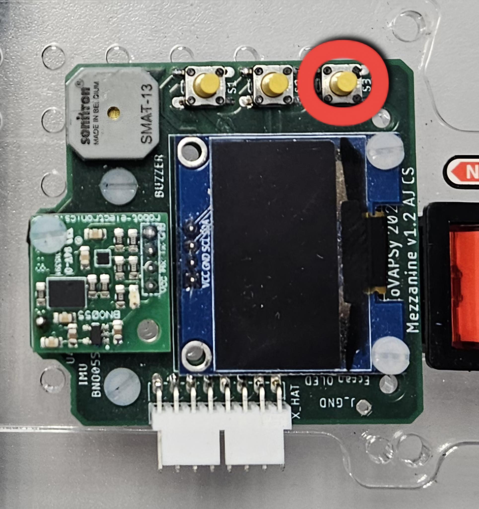
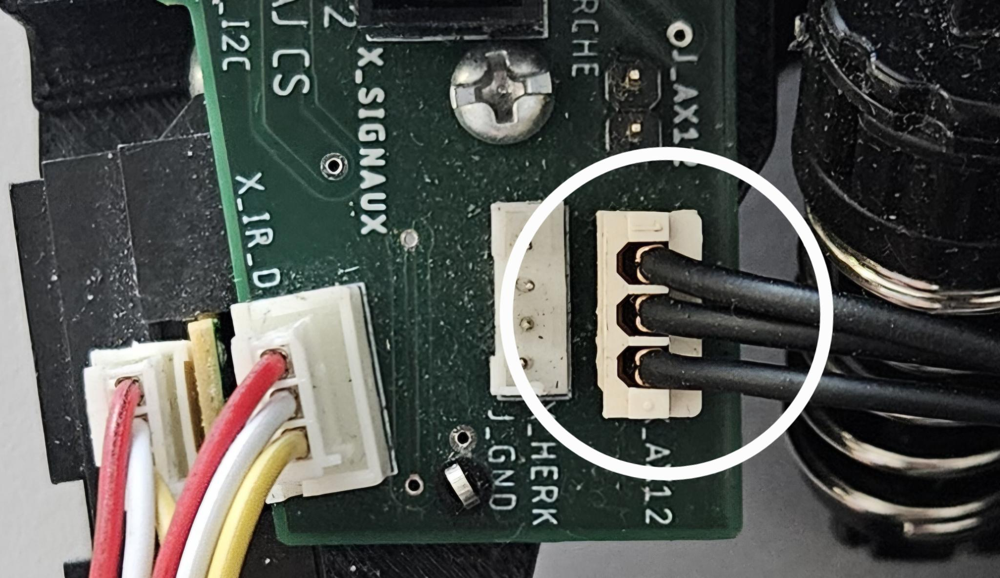
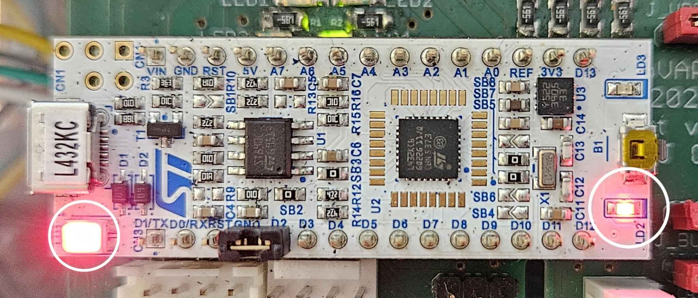
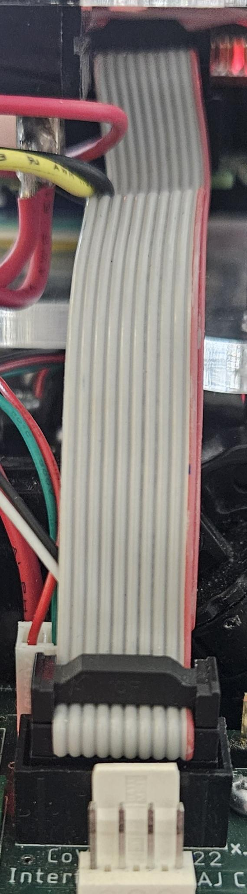

Troubleshooting
Cette section regroupe les problèmes courants et ceux que nous avons rencontrés et les solutions si elles sont connues.
I/ Odométrie incohérente
Vous avez deux cas distincts : soit le yaw est incohérent, soit les positions x et y sont incohérentes ou encore les deux en même temps.
Yaw incohérent
Ce cas est le plus simple à résoudre, cela est du au stm32 il suffit de le redémarrer. Pour cela, il faut appuyer le bouton encoutré sur la photo suivante :
{kind=link}

Vous devriez entendre un bip, cela signifie que le stm32 a redémarré et que le yaw est à nouveau cohérent.
Positions x et y incohérentes
Ce cas est facile à résoudre il faut juste faire avancer la voiture avec les roues au sol. Cela est du au fait que la fourche optique est entre deux troues du disque codeur, il suffit de faire avancer la voiture pour que la fourche optique puisse se positionner correctement et que les positions x et y soient cohérentes.
II/ Moteur de direction qui ne répond pas
Ici aussi il y a deux causes possibles : le bauderate n’est pas le bon ou le moteur est juste débranché.
Bauderate incorrect
Il faut changer le paramètre dans le launchfile de sensor. Sur bolide1 il est à 115200 et sur bolide2 il est à 1000000. Si vous avez des doutes vous pouvez utiliser le logiciel : dynamixel wizard 2. Voir aussi le tuto dynamixel wizard 2 pour utiliser le logiciel.
Moteur de direction débranché
Il faut que le cable du haut soit branché à la carte d’alimentation comme sur la photo suivante :
{kind=link}

III/ Moteurs qui ne répondent pas
Voici la marche à suivre pour résoudre ce problème :
1/ Vérifier l’ESC
Dans un premier temps, vérifier que le switch de sécurité est bien en position ON et que le bouton de l’esc est en off. Allumer le switch de l’ESC et vérifier que la led verte s’allume et que vous entendez un bip court. Si ce n’est pas le cas, il y a un problème soit un problème d’alimentation soit un problème sur l’ESC.
Avertissement
Attention : L’ESC est le composant qui brule en premier généralement, il est donc important de vérifier son bon fonctionnement avant de chercher une autre cause.
2/ ESC qui bip bip
Cela veut dire que l’ESC ne ressoit pas de signal de neutre de la part du stm32. Il y a plusieurs causes à se problème : soit le stm32 ne fonctionne pas, soit il est mal branché, soit il est mal configuré.
STM32 qui ne fonctionne pas
Il faut regarder les led du stm32, une doit s’allumer en rouge et l’autre doit clignoter en rouge comme sur la photo suivante :
{kind=link}

Si elle ne s’allume pas prenez un autre stm32 si sur la boite il y a un scotch c’est quelles sont déjà flashées, sinon il faut le flasher. Suivez suivant pour flasher le stm32 : tuto flashing stm32.
STM32 mal branché
Il faut vérifier que le cable sur la photo suivante est bien branché entre le hat et la carte d’alimentation :
{kind=link}

IV/ Si vous avez changé l’ESC
Si vous avez remplacé l’ESC, il est nécessaire de le recalibrer afin qu’il fonctionne correctement avec le STM32.
Cette calibration permet de définir précisément les positions neutre, pleine accélération et frein.
Calibration de l’ESC Tamiya TBLE-04S
Suivez les étapes suivantes :
Allumer l’ESC
Vérifiez que :le switch de sécurité est sur ON ;
l’ESC est correctement alimenté.
Définir le neutre
Mettre l’accélérateur au neutre (
cmd_vel = 0.0)Appuyer sur le bouton SET
Relâcher lorsque la LED devient rouge pour la deuxième fois
Le neutre est alors enregistré (LED rouge clignotante).
Définir la pleine accélération
Mettre l’accélérateur à fond (
cmd_vel = 1.0)Appuyer sur SET
Le point haut est alors enregistré (double clignotement rouge).
Définir le frein
Mettre l’accélérateur en frein complet (
cmd_vel = -1.0)Appuyer sur SET
La calibration est terminée lorsque la LED s’éteint.
Note
cmd_velcorrespond au topic ROS/cmd_vel, utilisé pour piloter la vitesse de la voiture.Vérifiez que le STM32 envoie correctement le signal PWM à l’ESC après calibration.
En cas d’échec, redémarrez l’ESC et recommencez la procédure.
Active la marche arrière
Sur certains ESC, la marche arrière peut être désactivée par défaut.
Allumer l’ESC en maintenant le bouton SET appuyé
Appuyer brièvement sur SET pour entrer en mode programmation (LED rouge clignotante)
Maintenir l’accélérateur en marche arrière (
cmd_vel = -1.0) pendant environ 2 à 3 secondesAttendre un changement de clignotement de la LED ou un bip
Note
Certains ESC désactivent la marche arrière pour des raisons de sécurité.
Après activation, des valeurs négatives sur
/cmd_velpermettent de faire reculer la voiture.Si la marche arrière ne fonctionne pas, vérifiez la calibration et les connexions.
Plus sur l’ESC Tamiya TBLE-04S
Tout sur l’initialisation ESC : https://www.thercracer.com/2021/05/tamiya-tble-04s-esc-speed-controller.html
Vidéo : Setting Up Your New TBLE-04S ESC (rechercher sur YouTube)